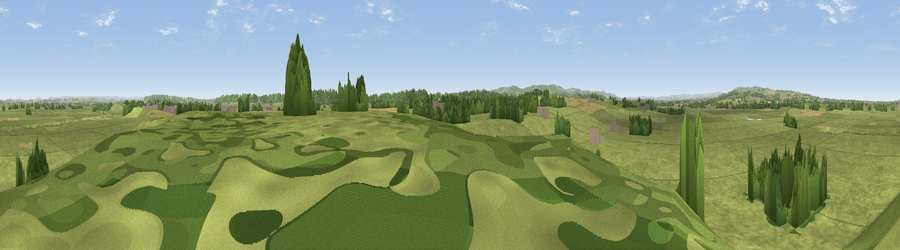

Viewpoint near North Curry
#30163 in England · top 77% of its area beats it · near North Curry · path 126 mWhere it is
The exact computed spot (ST 32325 26175). Click the marker for map links.
Public access: the nearest public right of way is about 126 m away — the final stretch may cross private land. Computed from Natural England's CRoW access layer and OpenStreetMap rights of way — not the legal definitive map. Always verify locally.
The view, rendered

A 360° render of this exact spot computed from the terrain model, tree cover and land cover — summer colours, afternoon light, calibrated against photographs of famous viewpoints. Real trees, hedges and buildings will differ in detail.
The panorama
Grey silhouette: terrain skyline in each direction (720 bearings, Earth curvature and refraction included). Dashed green: skyline with trees (+15 m) and buildings (+8 m) as obstacles. Blue strip: how far the ground is visible on each bearing.
Where the view opens
Wedge length = distance to the farthest visible ground on that bearing (vegetation-aware). Rings at 10, 25 and 50 km.
What fills the view
84% grassland · 10% woodland · 5% cropland ·
Angular shares of the visible panorama (visual magnitude), not map area. Landscape diversity 0.25 (0–1 Shannon).
Key numbers
More beautiful places nearby
The staircase of upgrades: each row has a higher view potential than everything closer. Driving times are estimates from straight-line distance, calibrated against real road routing — check an actual route before setting out.
| Place | Direction | Drive | Score |
|---|---|---|---|
| Viewpoint near Curry Mallet | SSE · 3 km | ~8 min | 68.0 |
| Viewpoint near North Petherton | NW · 8 km | ~16 min | 71.2 |
| Viewpoint near North Petherton | NW · 9 km | ~17 min | 72.1 |
| Viewpoint near Thurloxton | NW · 9 km | ~18 min | 73.3 |
| Kingston Beacon | WNW · 10 km | ~20 min | 74.0 |
| Viewpoint near Broomfield | NW · 11 km | ~21 min | 76.0 |
| Viewpoint near Buckland St. Mary | SSW · 12 km | ~22 min | 77.3 |
| Viewpoint near Broomfield | WNW · 14 km | ~26 min | 78.5 |
51.03094, -2.96645 · source: screening · position refined by local search. Computed location — check access rights before visiting.